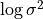
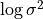
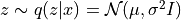
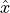
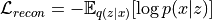
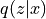
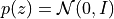
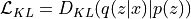
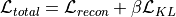
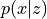

Deep learning for NeuroImaging in Python.
Note
This page is a reference documentation. It only explains the class signature, and not how to use it. Please refer to the gallery for the big picture.
- class nidl.estimators.autoencoders.VAE(encoder: Module, decoder: Module, encoder_out_dim: int, latent_dim: int, beta: float = 1.0, default_dist: str = 'normal', stochastic_transform: bool = True, lr: float = 0.0001, weight_decay: float = 0.01, random_state: int | None = None, **kwargs)[source]¶
Bases:
TransformerMixin,BaseEstimatorVariational Auto-Encoder (VAE) [R3] [R4].
See Also:
BetaVAELossA VAE is a probabilistic generative model that learns a latent representation of input data and reconstructs it. It implements fit and transform methods to respectively train the model and obtain the latent embeddings.
The VAE consists of three main components:
Encoder: maps input x to latent mean
 and log-variance

and log-variance
Reparameterization trick: samples latent vector 
Decoder: reconstructs input  from latent vector

The model is trained by minimizing the sum of two components:
Reconstruction loss: Measures how well the decoder reconstructs the input.
For binary data: Binary Cross-Entropy (BCE) loss
For continuous data: Mean Squared Error (MSE) loss

KL Divergence loss: Encourages the latent distribution  to be close to the prior .

The total loss is a weighted sum of these two components:

- Parameters:
encoder : class:~torch.nn.Module
The encoder mapping input
xto the representation space. The mean and log-variance layers
are automatically added according to the latent_dimparameter.decoder : class:~torch.nn.Module
The decoder backbone outputting  as a torch.distributions or a torch.Tensor representing the mean of a Normal (default) or Laplace distribution.
encoder_out_dim : int
The output size of the encoder.
latent_dim : int
The number of latent dimensions (which is the size of the mean and variance of the posterior distribution).
beta : float, default=1.
Scaling factor for Kullback-Leibler distance (beta-VAE).
default_dist : str, default=”normal”
Default decoder distribution. It defines the reconstruction loss (L2 for Normal, L1 for Laplace, cross-entropy for Bernoulli).
stochastic_transform : bool, default=True
If True (default), the transformed data are obtained by sampling according to the posterior distribution
 .If False,
the mean of the posterior distribution is returned.
.If False,
the mean of the posterior distribution is returned.lr : float
the learning rate.
weight_decay : float
the Adam optimizer weight decay parameter.
random_state : int, default=None
setting a seed for reproducibility.
kwargs : dict
trainer parameters.
References
Attributes
encoder
(
Module) The encoder network.decoder
(
Module) The decoder network.fc_mu
(
Module) The linear layer mapping the encoder output to the mean of the posterior distribution.fc_logvar
(
Module) The linear layer mapping the encoder output to the log-variance of the posterior distribution.- forward(x: Tensor) Tensor[source]¶
Encode the input and sample from the posterior distribution q(z|x).
- Parameters:
x : torch.Tensor
Input data given to the encoder.
- Returns:
z : torch.Tensor, shape (batch_size, latent_dim)
Latent vector sampled from the posterior distribution.
- sample(n_samples)[source]¶
Generate n_samples by sampling from the latent space.
- Parameters:
nsamples : int
Number of samples to generate.
- Returns:
x : torch.Tensor
Generated samples.
- training_step(batch: Tensor, batch_idx: int, dataloader_idx: int | None = 0)[source]¶
Perform one training step and computes and logs training losses.
Three losses are logged: the beta-VAE loss (“loss”), the reconstruction loss (“rec_loss”) and the KL divergence loss (“kl_loss”).
- Parameters:
batch : torch.Tensor
The input data given to the encoder.
batch_idx : int
Ignored.
dataloader_idx : Optional[int], default=0
Ignored.
- Returns:
losses : dict
Dictionary with “loss”, “rec_loss”, “kl_loss” as keys.
- transform_step(batch: Tensor, batch_idx: int, dataloader_idx: int | None = 0)[source]¶
Transform the input data to the latent space.
By default, the latent vector is obtained by sampling according to the posterior distribution
. It is just the mean of the
distribution if stochastic_transformis False.- Parameters:
batch : torch.Tensor
The input data given to the encoder.
batch_idx : int
Ignored.
dataloader_idx : Optional[int], default=0
Ignored.
- Returns:
z : torch.Tensor, shape (batch_size, latent_dim)
The latent vector.
- validation_step(batch: Tensor, batch_idx: int, dataloader_idx: int | None = 0)[source]¶
Perform one validation step and computes and logs validation losses.
Three losses are logged: the beta-VAE loss (“loss”), the reconstruction loss (“rec_loss”) and the KL divergence loss (“kl_loss”).
- Parameters:
batch : torch.Tensor
The input data given to the encoder.
batch_idx : int
Ignored.
dataloader_idx : Optional[int], default=0
Ignored.
- Returns:
losses : dict
Dictionary with “loss”, “rec_loss”, “kl_loss” as keys.
Follow us